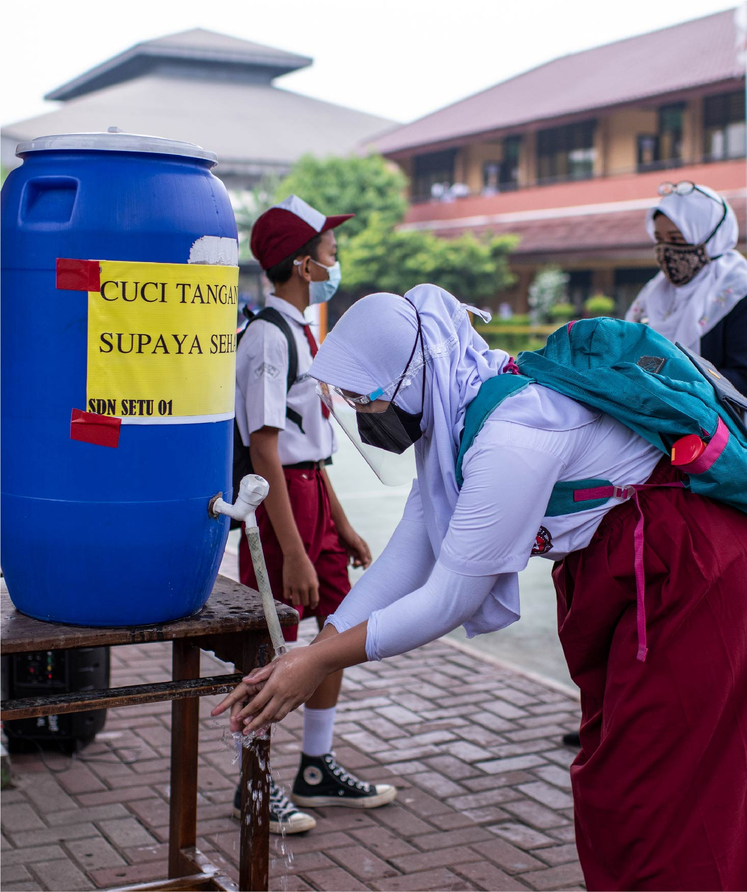

United Nations In Indonesia
Country Results Report 2021
WASH

The emergence of handwashing as a key preventative measure for the spread of COVID-19 underscored the importance of universal access to water, sanitation, and hygiene—collectively known as WASH—globally. Yet despite steady progress in Indonesia, almost 15% of primary health centres still have no water services, according to government research, which also suggests fewer than half of the population over the age of 10 practices correct handwashing.
In 2021, some 232,000 people in Indonesia, including those in health facilities, benefitted from WASH interventions as part of the UN’s COVID-19 prevention and response efforts.
More broadly, the UN supported the Government’s WASH-related objectives via high-level advocacy events on issues such as eliminating open defecation, and through the establishment of innovation hubs like INCUBITS—a WASH start-up incubator launched in summer 2021. The UN supported the Ministry of Health in developing a national roadmap for inclusive WASH in Community Health Centers, designed to address the specific WASH needs of women and vulnerable populations and prevent stigma and discrimination. The UN’s recommendations towards the roadmap were informed by focus groups designed to deepen understanding of the WASH needs of those most at risk of being left behind.
The UN also supported the government’s implementation of the national road map of Water Safety Plans (WSP) 2021-2025. That included conducting a five-day introductory training on Water Safety Plans for 127 representatives of 47 drinking water providers, in collaboration with the Ministry of Public Works and Housing. These “master trainers” are now equipped to train their provincial-level counterparts on WSP. Meanwhile, more than a million people benefitted from water safety plans piloted at five water suppliers in 2021, according to the WHO’s estimates. The UN and partners conducted a baseline assessment of the water treatment system’s prior operational structure, as well as an assessment after five months of interventions, which showed improvements in the chlorination process and operational monitoring. A parallel UN supported survey on national water quality that covered 20,000 households helped establish Indonesia’s firstever baseline for SDG-6.1, which seeks to secure safe and affordable drinking water for all.
UN Interventions on WASH are delivering direct results in some of Indonesia’s most impoverished areas. An UN-brokered partnership between Bekasi City and Sumbawa Barat district, for example, facilitates knowledge exchange and sharing best practices on sanitation. In East Nusa Tenggara and West Nusa Tenggara provinces, city sanitation strategies are now informed by Climate Action Research, with national roadmaps informed by data on climate change underway. Meanwhile, 13 Ministers have committed to making hand washing a reality for all Indonesians. Another program to promote open defecation-free villages benefitted more than 100,000 people living in 273 villages in Aceh in 2021, leading to a reduction in stunting rates among children under five years old living in those villages.
The UN’s public advocacy and hygiene behavioural change interventions reached 380,000 people. Elsewhere the mobile-based Oky app helped promote sexual reproductive health among adolescent girls. One million school children received COVID-19 Safe school kits thanks to the UN leveraging private sector resources through the Public Private Partnership on handwashing with soap, which aided the safe reopening of 15,000 schools.